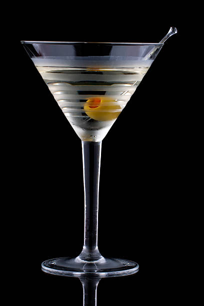
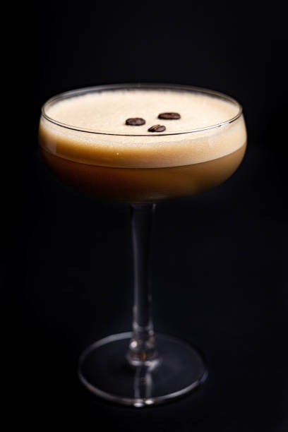
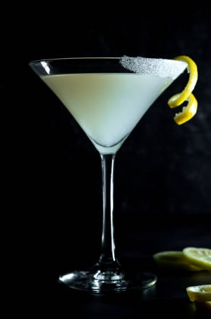

Why Martinis?
Martinis are classy, timeless, and have endless possibilities for customization. Whether you are craving something strong, sweet, fruity, or savory, there is a martini for every occasion.
- Perfect for girl's nights
- Aesthetic and elegant
- Endless flavor combinations

Dirty Martini
A savory classic made with the perfect pairing of vodka/gin and olive brine with olives to garnish.

Espresso Martini
A bold, rich, and lively mix of vodka espresso, and coffee liqueur with coffee beans to garnish.

Lemon Drop Martini
A sweet, tart, and fruity refreshing mixture of vodka, fresh lemon juice, and simple syrup.
Martini Tips
- Use high-quality ingredients for the best flavor
- Garnish intentionally for aesthetics
- Shaken or stirred is up to you, but ALWAYS serve chilled